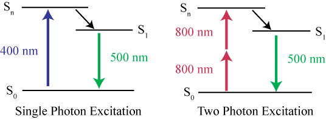
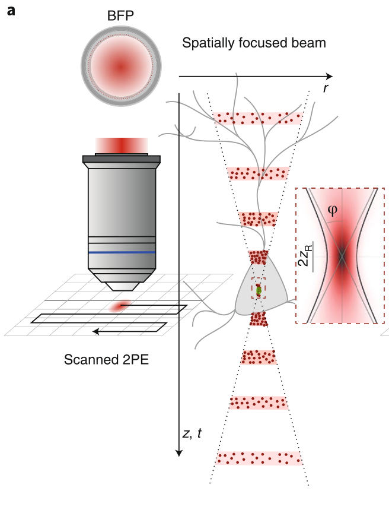
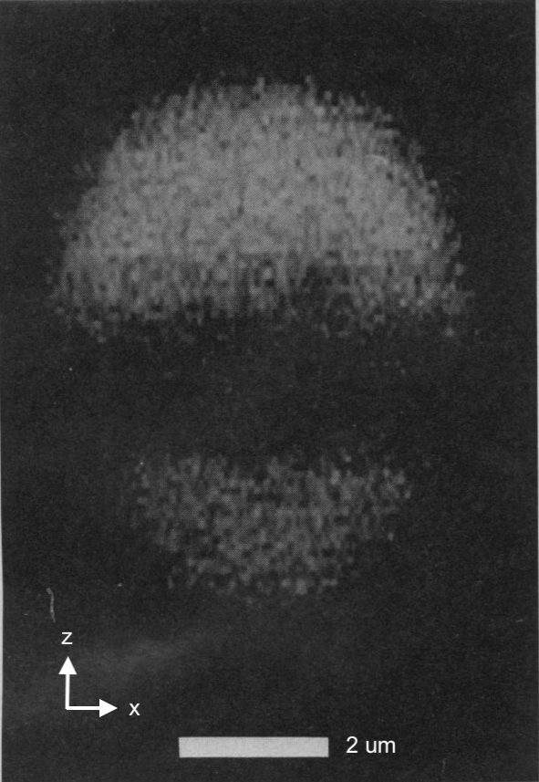
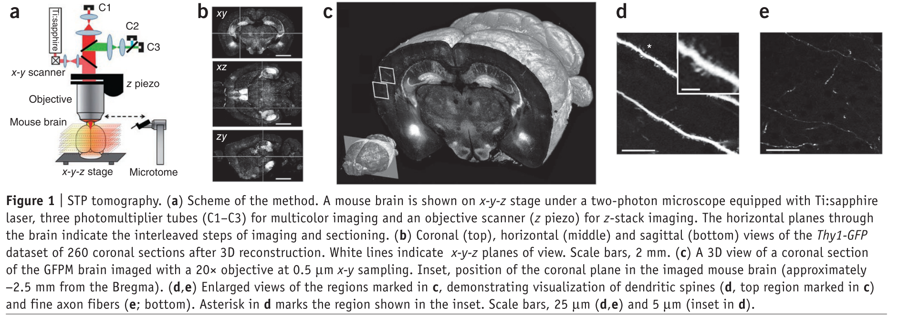
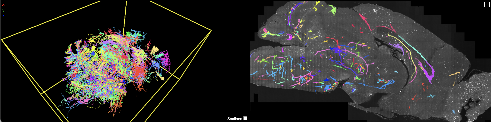

class:inverse ### Modern Optical Microscopy: Theory and Practice ### Final Presentation Thomas L. Athey April 28, 2022 <br><br> <!-- <img src="../images/funding/KNDI.png" STYLE="HEIGHT:95px;"/> --> <br> --- class:inverse ### Two Photon Excitation Theory <div class="row"> <div class="column2"> </div> <div class="column2"> “It appears that a nonzero probability exists that ... two photons whose frequency-sum equals the excitation frequency of the atom co-act to excite the atom.” <br> Maria Göppert-Mayer, 1930 Dissertation. </div> </div>  <!-- Maria Goeppert Mayer doctoral thesis in germany on two photon absorptioon - "assistant" at JHU due to anti-nepotism, unpaid at Columbia --> <footer, style="font-size: 12px"> https://www.photometrics.com/learn/physics-and-biophysics/two-photon </footer> --- class:inverse ### Practical Benefits of Two Photon Excitation <div class="row"> <div class="column2">  </div> <div class="column2">  </div> </div> - Optical Sectioning <br> - Less photobleaching <br> - Penetration Depth <footer, style="font-size: 12px"> Denk et. al., 1990, <i>Science</i>; Papagiakoumou et. al., 2020, <i>Nature Methods</i>. </footer> --- class:inverse ### Serial Two Photon Tomography  <footer, style="font-size: 12px"> Osten et. al., 2012, <i>Nature Methods</i>. </footer> --- class:inverse ### STP for Neuron Tracing <img src="images/data.png" STYLE="width:75%;" class="center"/> <font size="-1">$$\downarrow$$ </font>  <footer, style="font-size: 12px"> Winnubst et. al., 2019, <i>Cell</i>. <a href="https://viz.neurodata.io/?json_url=https://json.neurodata.io/v1?NGStateID=8-5GRP20jgKZAQ">link</a> </footer>